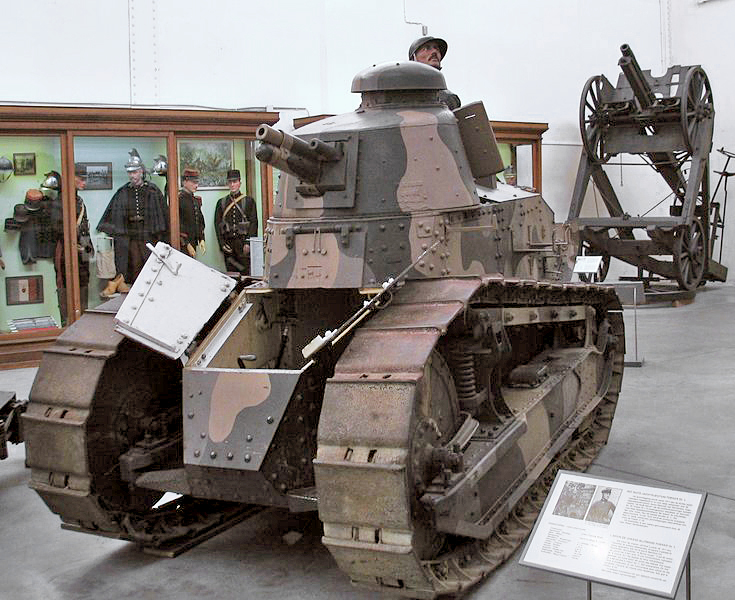
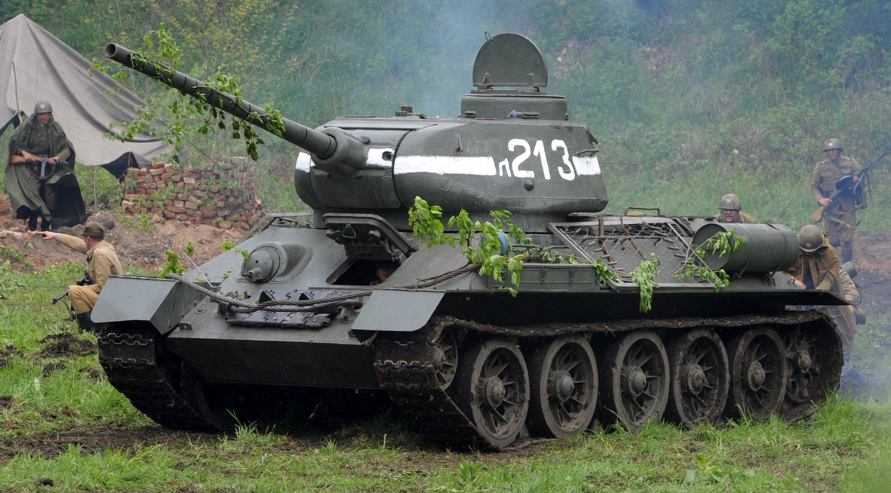
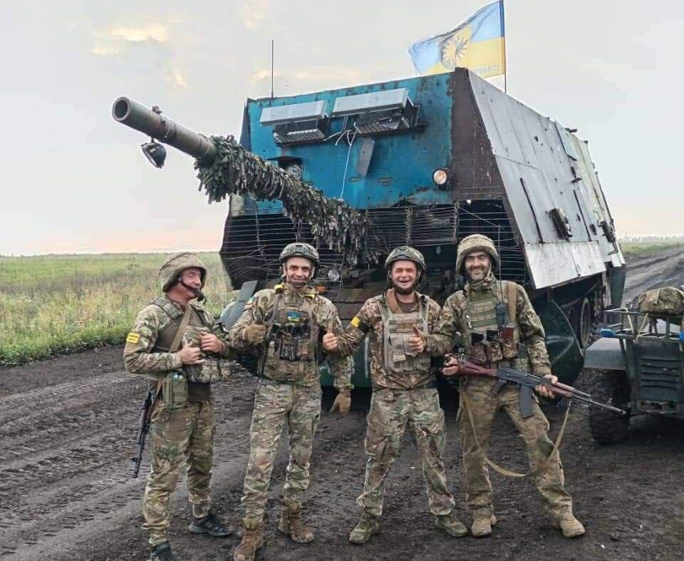
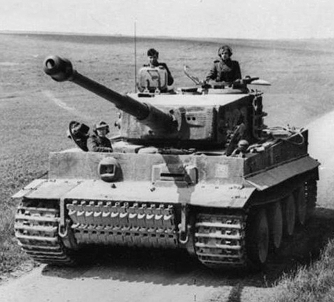
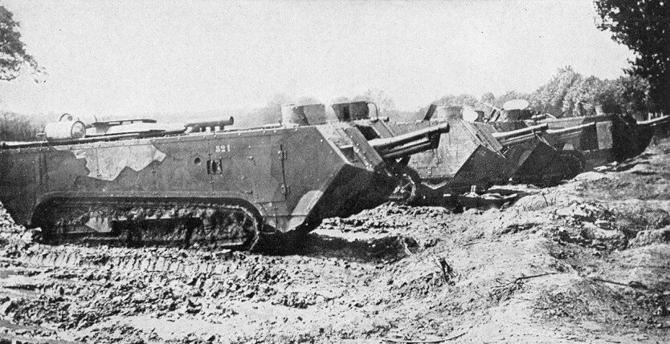
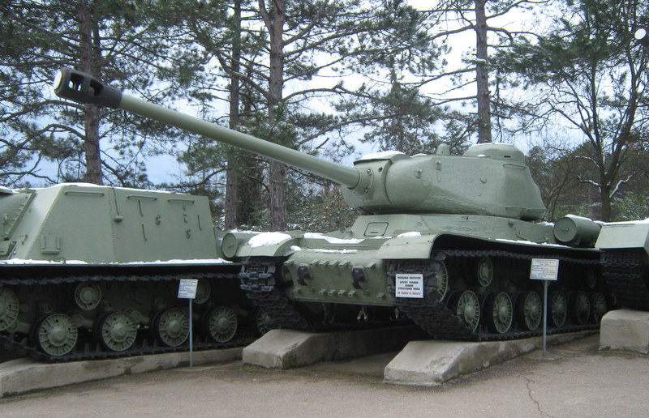
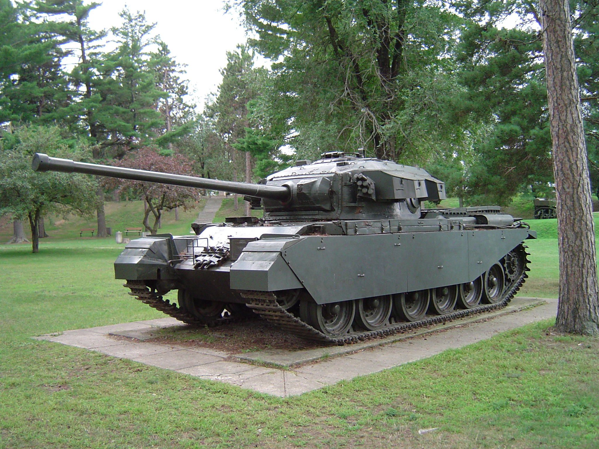
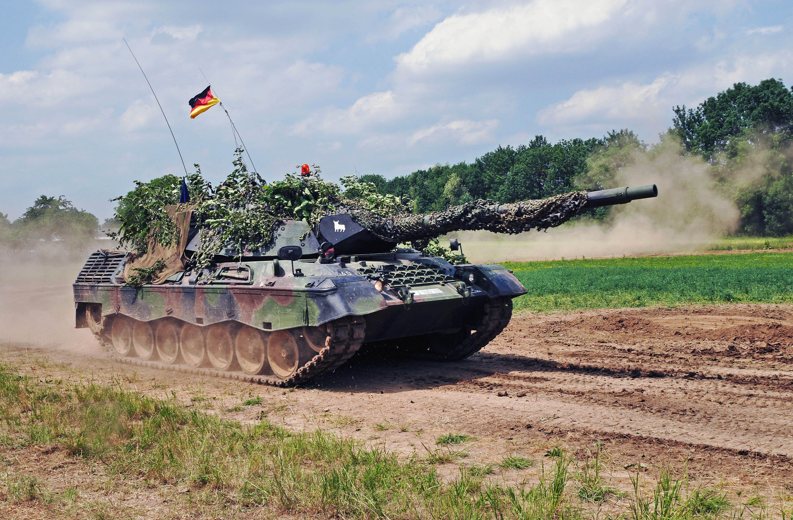
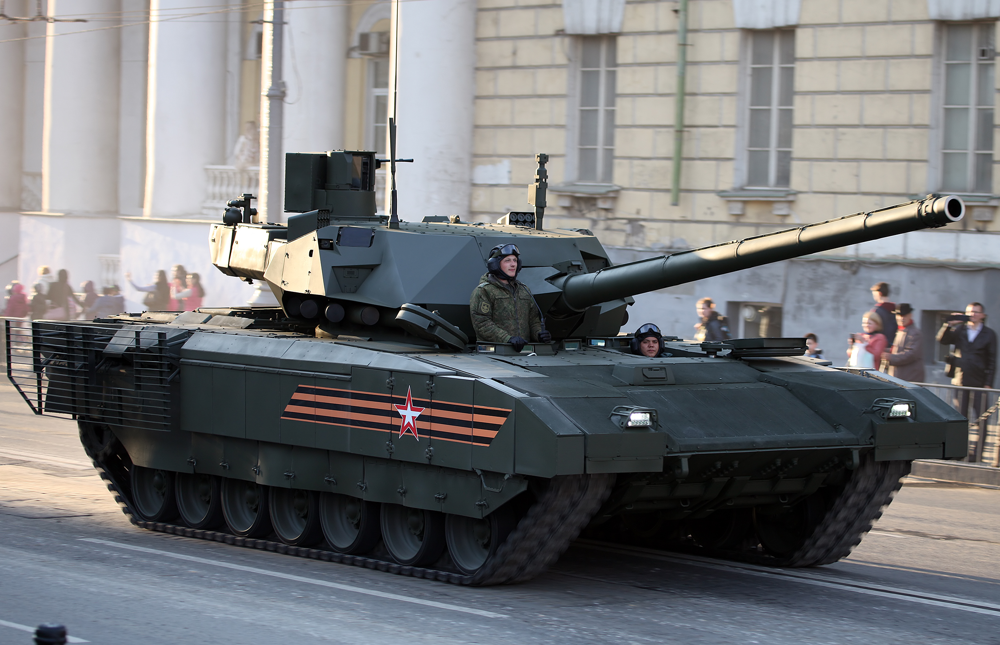

我研究后发现
坦克每次进化，背后几乎都有一个很现实的问题。比如一战时是堑壕和机枪，二战时是速度和火力，今天则是无人机、导弹和战场太透明。
10岁孩子的研究汇报
Special Cover Story我想用时间顺序讲清楚一件事：坦克不是突然变厉害的，它是在战争问题、国家想法和制造能力的推动下，一步一步变成今天这个样子的。





我的开场白
坦克每次进化，背后几乎都有一个很现实的问题。比如一战时是堑壕和机枪，二战时是速度和火力，今天则是无人机、导弹和战场太透明。
坦克不是单独作战的钢铁怪兽，而是一种会跟着时代规则一起改变的武器。国家的工业能力、战术想法和敌人的威胁，都会影响它的样子。
汇报章节
先讲第一辆坦克为什么会被发明出来。
1916-1918讲它们为什么笨重、慢，而且经常坏。
1939-1945讲为什么坦克变得更快、更强，也更像一支真正的装甲部队。
各国路线讲英国、德国、苏联和美国为什么想法不一样。
1945-1991讲为什么坦克进入了“主战坦克”时代，越来越强调平衡和持续升级。
2022-现在讲为什么今天的坦克会怕无人机、导弹和被快速发现。
未来讲它会不会继续升级，还是需要和更多新装备一起作战。
第 1 章
我汇报这一章时会先说：坦克出现，不是因为人们突然想造钢铁怪兽，而是因为一战战场被堑壕、铁丝网和机枪卡住了，步兵很难向前推进。
英国先做，是因为它最急着解决堑壕僵局。法国也很快跟进，但更重视数量和灵活性。
早期坦克更像“把发动机、履带和钢板硬拼在一起”的工程尝试，可靠性并不高。
英国 Mark I 是典型早期坦克，外形菱形，就是为了跨越壕沟。
它太慢、太热、太吵，而且经常坏，说明“能出现”不等于“已经成熟”。
第 2 章
我会把这一章讲成“第一代坦克的试错期”。它们虽然很粗糙，但第一次证明了装甲车辆真的可以帮助步兵突破防线。
如果把一战坦克比作学生，它像刚学会走路的大块头，动作很笨，但已经让大家看到了它未来可能会跑起来。
英国偏重跨壕沟和突破，法国后来更喜欢小一些、数量更多的设计，这影响了之后很多国家。
发动机动力弱、悬挂技术早期、车内环境糟糕，所以一战坦克很容易出故障。
法国雷诺 FT 的炮塔布局很重要，因为它让后来很多坦克都走上“旋转炮塔 + 前驾驶 + 后发动机”的路线。
一战结束时，大家知道坦克有用，但还不知道应该把它当成步兵帮手，还是独立主力。
第 3 章
我会说：二战像一次加速考试。坦克不再只是慢慢往前推的装甲车，而是必须兼顾速度、火力、装甲和通信的主力武器。


德国重视机动和配合，苏联重视大规模生产与冲击力，美国重视可靠、标准化和全球运输能力。
二战中，焊接装甲、倾斜装甲、改进发动机、无线电普及都让坦克更像成熟兵器系统。
德军的虎式代表高性能思路，苏联 T-34 代表平衡和量产思路，美国谢尔曼代表可靠和易维护思路。
性能越高，通常越贵也越复杂，所以“最强”不一定最适合长期战争。
更多历史代表坦克
我把几种很有历史代表性的坦克也补进来了。这样在汇报时，我不只是讲 5 个经典型号，而是能更清楚地说明：坦克从试验品、第一次世界大战、第二次世界大战，一路是怎样慢慢变成成熟主力兵器的。



国家路线
我研究后发现，不同国家的坦克差异，不只是工程师喜好不同，更像是各自的工业能力、地理环境和作战想法一起写出来的答案。

第 5 章
我会把这一章讲成“主战坦克时代的出现”。冷战让很多国家发现，与其分轻坦克、中坦克、重坦克，不如做一种更平衡的主战坦克，让火力、机动和防护尽量放在同一辆车上。


虽然这里没有单独放 T-62 的照片，但我会补充：苏联在冷战时期也沿着低矮外形、厚炮塔和大批量装备的方向继续发展。
因为各国慢慢不想把坦克分成太多类别，而是希望一辆车就能承担战场主力任务。
更好的火控、测距、发动机和炮弹技术，让冷战坦克越来越像可持续升级的平台。
冷战后坦克变得更强了，但也越来越贵、更依赖电子设备，这为后来的现代战场问题埋下了伏笔。
第 6 章
我会在这一章说：坦克没有突然没用，而是它面对的战场变得更透明了，更容易被发现，也更容易被从上方打击。
这说明坦克今天最怕的，不只是另一辆坦克，而是“被看见以后，很快就被很多武器一起盯上”。
俄罗斯沿用了不少传统装甲思路，但现代战场的信息化压力更大，老办法常常不够用了。
附加装甲、顶棚防护、主动防护系统和电子干扰，都是为了应对“从远处和上方来”的新威胁。
很多坦克加装笼式装甲或顶部遮挡物，虽然不完美，但能看出设计者在紧急应对新的攻击方式。
未来坦克必须更会协同，也许不只是变厚变重，还要变得更会“发现敌人”和“保护自己不被发现”。
第 7 章
我的结尾不会说“坦克一定会消失”或者“一定会更强”，我更想说：坦克未来会不会继续重要，要看它能不能学会新的保护方式和新的协同方式。
我觉得未来的坦克不一定只是“更大的钢铁盒子”，而是更像一个会和很多装备一起工作的移动战斗节点。


不同国家未来路线可能继续分化，有的更重视重装甲，有的更重视网络化和协同系统。
未来升级不只是钢板更厚，还可能包括更好的电子系统、主动防护、主动拦截和人机协作。
有人主张无人炮塔、有人主张更强主动防护，也有人觉得应把坦克放进更大的作战网络中思考，并与无人协同系统配合。
坦克未来未必减少，而是会被重新定义：它得更聪明，而不只是更厚重。
参考资料
我会参考通史类资料，帮助自己理解从一战到二战的整体变化，而不是只记单一型号。
我会看不同国家的装甲发展介绍，比较它们的工业、战术和设计思路。
我会看关于俄乌战争中无人机、反坦克武器和现代防护的公开分析，用来说明今天的新问题。
本站使用的型号图片整理自 Wikimedia Commons / Wikipedia 的公开图片页面，主要包括 Mark I、Renault FT、Tiger I、T-34 和 M4 Sherman。